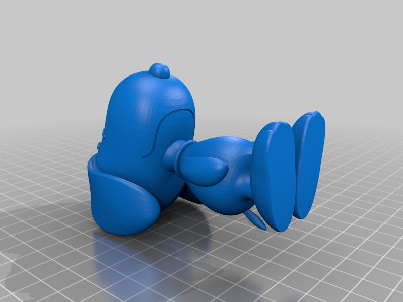
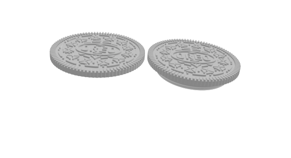
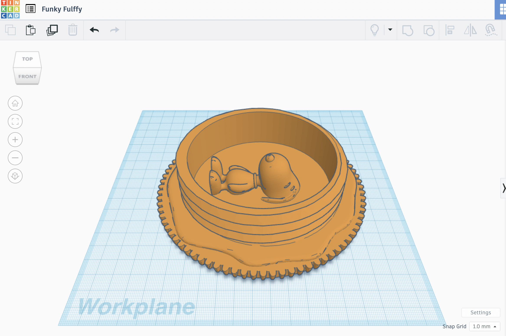
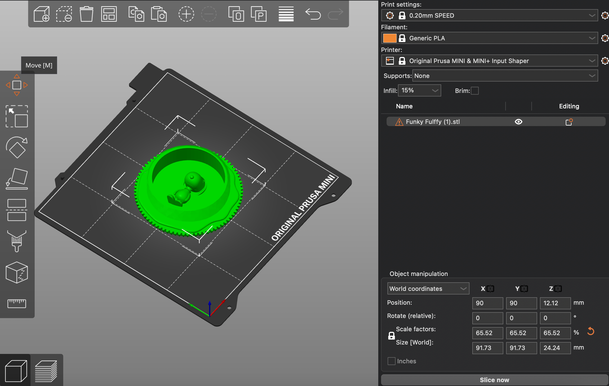
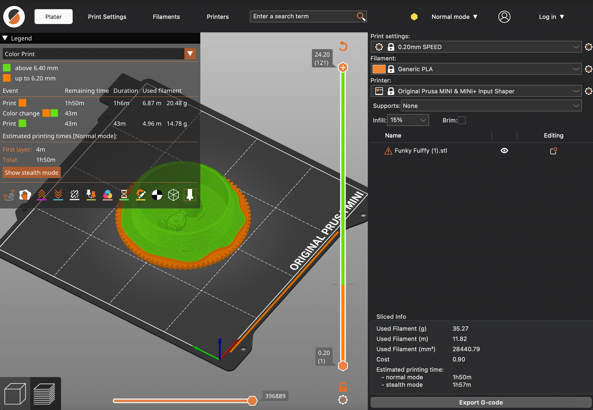

Process:
1. Found 2 models on https://thangs.com/
2. Sketched out my idea on paper.

3. Remixed the Snoopy model and the Oreo botton surface in TinkerCad.
I realized that a standing Snoopy in Oreo requires a thick interlayer, which reduces the printing's similarity to Oreo.
Thus, I changed the posture of Snoopy to lying.
In order to "stick" the Snoopy onto the flat oreo surface, I sliced the back side of Snoopy to create a flat surface on it.
4. Remixed the two models.
5. Increase the overall size to make the details more visible.
6. Ecported the file as 3mf file
7. Imported the 3mf file into Prusaslicer.
8. Sliced the model into two pieces to switch the color from black to white.
9. Printed.

Reflection:
Overall, the remix was successful and it achieved my goal.
The layer-by-layer printing capability of a 3D printer is particularly well-suited to replicating the appearance of an Oreo.
To enhance my printing process, I will document more details of my design. This is because the undocumented size scaling has created significant difficulties for further model design, which will be elaborated on in the Fusion Remix.
Also, TinkerCad does not have slicing function, and I had to create two cubes to slice the model into two parts. It might remind me the importance of choosing an appropriate CAD software if possible in the future, which would increase the design efficiency.
In the future, I plan to add more functional elements to my design. For instance, I might incorporate a hole with a chain so that the Oreo can be hung on a bag or keychain.